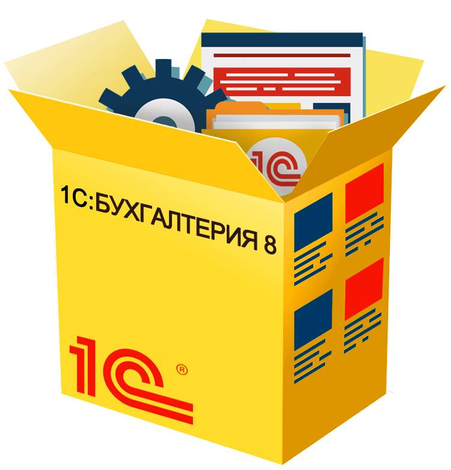

1С:Бухгалтерия 8 для Беларуси
«1С:Бухгалтерия 8» — это профессиональный инструмент для ведения учета, подготовки и сдачи обязательной отчетности.
Понятный учет в соответствии с законодательством Республики Беларусь потребностями бизнеса, экономия времени при проведении расчетов с контрагентами, оформлении документов и хозяйственных операций, эффективная поддержка пользователей в сочетании с высоким комфортом работы — лишь некоторые ключевые особенности «1С:Бухгалтерии 8».
Описание
Конфигурация может использоваться в любой коммерческой структуре, вне зависимости от рода деятельности и масштаба — от небольших предприятий до многопрофильных холдингов. «1С:Бухгалтерия 8» позволяет вести учет в компаниях, занимающихся оптовой, розничной, комиссионной и Интернет-торговлей, выполнением подрядных работ, оказанием профессиональных и бытовых услуг, производством.
Состав счетов, организация аналитического, валютного, количественного учета на счетах соответствуют требованиям законодательства Республики Беларуси по ведению бухгалтерского учета и отражению данных в отчетности. При необходимости пользователи могут самостоятельно создавать дополнительные субсчета и разрезы аналитического учета.
План счетов в конфигурации реализован в соответствии с национальными стандартами бухгалтерского учета Республики Беларусь и международными стандартами финансовой отчетности.
В программе предусмотрена гибкая настройка под индивидуальные особенности бизнеса и принятые в компании принципы учета. Программа позволяет создавать новые справочники и изменять формы документов, текстовых, табличных и графических отчетов.